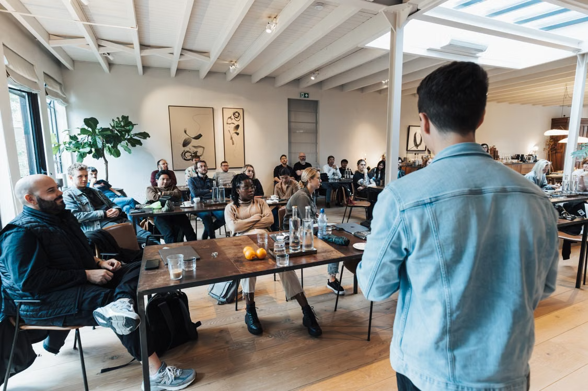
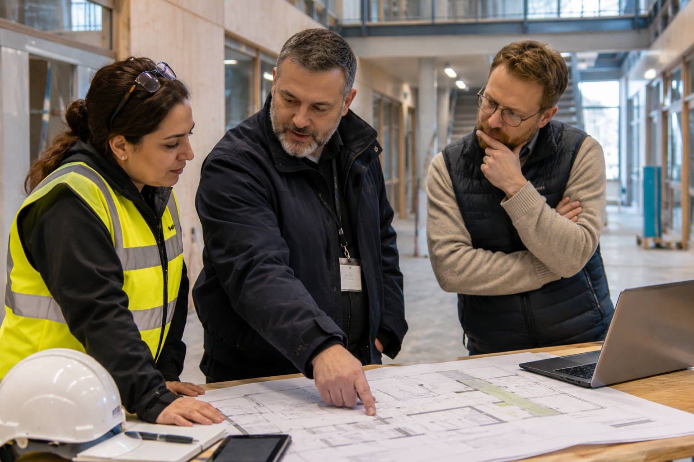

Kunskap som gör skillnad
Utbildningar & insatser
Anpassat efter er – genomfört hos er
Alla utbildningar anpassas efter er. Vi börjar med att prata om era utmaningar och era lokaler, och bygger sedan upplägget utifrån det.
Helst genomför vi utbildningen hos er, med en praktisk del i er egen miljö. Det ni har övat på plats sitter kvar på ett helt annat sätt än det ni har läst eller hört.

PDV-utbildning
En låst dörr kan köpa minuter. Minuter räddar liv.
Vid pågående dödligt våld är de första sekunderna och minuterna avgörande. Då finns ingen tid att fundera. Det som avgör är om ni vet vad ni ska göra.
Utbildningen leds av Johan Leopoldsson, tidigare insatspolis i Stockholm och specialutbildad för att hantera PDV. Som insatspolis var det hans jobb att ta sig in i låsta byggnader så snabbt som möjligt för att gripa farliga gärningsmän. I dag använder han samma kunskap åt andra hållet: för att hjälpa er att stoppa, fördröja och skydda er.
Vi går igenom hur sådana händelser brukar gå till, vilka varningssignaler som kan finnas innan och hur ni agerar enligt Fly – Sök skydd – Larma. Vi pratar om mental förberedelse, nödvärn, hur polis och räddningstjänst arbetar och hur man stoppar en livshotande blödning.
Sedan går vi ut i era egna lokaler. Var tar ni skydd? Vilka dörrar går att låsa eller barrikadera? Hur larmar ni? Det ni har övat där ni arbetar varje dag sitter kvar när det gäller.
Berätta om era behovInnehåll
- Fly – Sök skydd – Larma
- Mental förberedelse
- Nödvärn
- Stoppa livshotande blödning
- Praktiska övningar i era lokaler
Upplägg
Föreläsning ca 2 timmar, eller halv- eller heldag med övningar. Kombineras gärna med en säkerhetsvandring.
Före
Säkerhetsvandring – analys av fastighet och rutiner
Vi ser era lokaler med andra ögon.
Som insatspolis var en stor del av mitt jobb att snabbt ta mig in i låsta byggnader för att gripa farliga gärningsmän. Jag har lärt mig att leta efter det enkla: dörren som står på glänt, entrén som alla kan gå in genom och glasdörren som inte håller. Det är samma saker jag tittar efter när jag går igenom era lokaler.
Skillnaden är att jag nu hjälper er att täppa till dem. Ofta räcker det med enkla och billiga åtgärder för att stoppa eller fördröja någon, och för att ge er den tid ni behöver.
Vi går igenom entréer, dörrar och lås, var man kan söka skydd och barrikadera sig, flyktvägar och hur ni larmar. Helst gör vi vandringen tillsammans med en del av personalen. Då lär de sig se lokalerna på ett nytt sätt, och kunskapen stannar kvar hos dem som är där varje dag.
Ni får återkoppling direkt på plats och en skriftlig sammanställning med prioriterade åtgärder.
Berätta om era behovInnehåll
- Vandring tillsammans med personalen
- Entréer, dörrar och lås
- Skydd, barrikadering och flyktvägar
- Återkoppling på plats
- Skriftliga, prioriterade åtgärder
Upplägg
Ca 1,5–2 tim på plats per verksamhet. Kombineras gärna med PDV-utbildning till en halvdag.
Före · Under
Hotfullt och rättshaveristiskt beteende
Lugnet smittar. Det gör stressen också.
Många möter personer som ställer orimliga krav, skickar långa mejl eller hotar med anmälningar och kritik i sociala medier. Det tar tid och energi och skapar otrygghet i arbetsgruppen. Ibland går det över till rena hot.
Som polis har jag mött hotfulla och upprörda människor i alla lägen, från arga samtal till förhandling med personer i kris. Det jag har lärt mig är att hur du själv beter dig ofta avgör om en situation lugnar sig eller trappas upp. Det går att träna på.
Vi går igenom hur ni känner igen beteendet, håller er sakliga, sätter tydliga gränser och vågar avsluta samtal som spårar ur. Vi pratar om hur ni förbereder svåra möten, vad ni gör när någon blir hotfull och vad lagen säger om olaga hot, ofredande och nödvärn.
Vi övar på situationer från er egen vardag, så att ni känner er trygga nästa gång det händer.
Berätta om era behovInnehåll
- Känna igen rättshaveristiskt beteende
- Lugnt bemötande och tydliga gränser
- Mejl, telefon och svåra möten
- Lagstiftning och dokumentation
Upplägg
Ca 2 tim till halvdag, på plats eller digitalt.

Före · Under
Hot och våld – anpassat efter er verksamhet
Hot och våld ser olika ut beroende på var och hur ni arbetar. En undersköterska som går ensam in i ett hem har andra risker än en receptionist på natten eller den som kör en person som kan bli hotfull. Därför skräddarsys varje utbildning efter era arbetsmoment och de situationer era medarbetare faktiskt möter.
Jag har arbetat med hot och våld i polisen och därefter i flera år med säkerheten kring hemtjänst, ensamarbete och transporter av personer. Jag vet hur det ser ut ute i verksamheterna, och vad som faktiskt går att göra i vardagen.
Innan utbildningen pratar vi om era utmaningar och tar fram scenarier som deltagarna känner igen. Efter en teoretisk del om lagstiftning och mental förberedelse går vi ut i era lokaler, fordon eller arbetsmiljöer och övar där ni arbetar. Det man har övat på plats sitter kvar på ett helt annat sätt än det man har läst på datorn eller hört i en föreläsningssal.
Berätta om era behovExempel på målgrupper
- Hemtjänst, vård och omsorg – hembesök och ensamarbete
- Transporter av personer i fordon
- Hotell och besöksnäring
- Skola, kommun och myndighet
Upplägg
Från ca 2 tim till heldag, gärna på plats hos er.

Under · Efter
Krisledning – utbildning och övning
När krisen kommer finns ingen tid att läsa planen.
En krisplan gör bara nytta om de som ska använda den kan den. I krisledning hamnar fokus ofta på hur organisationen ska se ut och vem som gör vad, i stället för på uppgiften som faktiskt ska lösas. Då tappar man tid när det behövs som mest.
Jag har arbetat i akuta lägen inom polisen, där besluten måste tas snabbt och med ofullständig information. Efter polisen har jag varit tjänsteman i beredskap och arbetat med krisberedskap och krisledning i både kommun och på högskola. Jag vet hur det ser ut både i stunden och i ledningsrummet.
Vi utgår från er krisorganisation och era planer, och tränar på det som spelar roll: att fatta beslut under tidspress, kommunicera och samverka med andra. Upplägget anpassas efter er nuvarande nivå, oavsett om ni precis har börjat eller vill vässa en organisation som redan fungerar.
Utbildningen kombineras gärna med en övning. Övningen ska stärka er, inte sätta dit någon. Efteråt vet ni vad som fungerar och vad ni behöver utveckla.
Berätta om era behovInnehåll
- Utgår från er egen krisorganisation
- Fokus på uppgiften
- Beslut under tidspress
- Kommunikation och samverkan
- Anpassat efter er nuvarande nivå
Upplägg
Halv- eller heldag, gärna med övning hos er.

Före
Workshop: radikalisering och våldsbejakande extremism
Oro ska inte stanna i korridoren.
Det är ofta de som träffar en person i vardagen som först märker att något håller på att förändras. Men många är osäkra på vad de ska göra med det de ser. Är det något att reagera på? Vem ska man prata med? Vad får man berätta?
Jag har lett förebyggande samverkan mot radikalisering och våldsbejakande extremism i kommun, tillsammans med skola, socialtjänst och polis. Jag vet hur arbetet fungerar i praktiken och var det brukar haka upp sig.
Vi går igenom vad som ökar och minskar risken, hur radikalisering kan gå till, även på nätet, och vilka tidiga signaler man kan se. Fokus ligger på vad ni gör när ni känner oro: hur ni tar hand om den, vem som ansvarar för vad, vad som gäller för sekretess och hur ni samarbetar med socialtjänst och polis.
Workshoppen anpassas efter er verksamhet och bygger på verkliga, avidentifierade fall. Ni går därifrån med tydliga rutiner och vet vem ni ska vända er till.
Berätta om era behovInnehåll
- Tidiga signaler
- Att hantera oro
- Sekretess och informationsdelning
- Samverkan med socialtjänst och polis
Upplägg
Ca 2–3 tim, på plats hos er.

Före
Säkerhetsrådgivning vid nybyggnation av skola
Säkerhet är enklast och billigast att få in när byggnaden fortfarande ritas. Vi går igenom ritningar och planer ur ett säkerhetsperspektiv och föreslår enkla, rimliga åtgärder som höjer säkerheten.
Jag tittar på ritningarna med samma ögon som när vi planerade hur vi skulle ta oss in i en byggnad. Var kommer man in? Vad tar tid? Var kan personal och elever ta skydd? Det handlar om entréer, lås, skyddade rum och flyktvägar.
Berätta om era behovInnehåll
- Granskning i ritningsskedet
- Entréer, lås och utestängning
- Skyddade rum och flyktvägar
- Enkla och rimliga åtgärder
Upplägg
Enligt överenskommelse.
Nästa steg börjar med ett samtal
Hur kan vi stärka er trygghet?
Hör av er för ett förutsättningslöst samtal om er verksamhet och era behov.